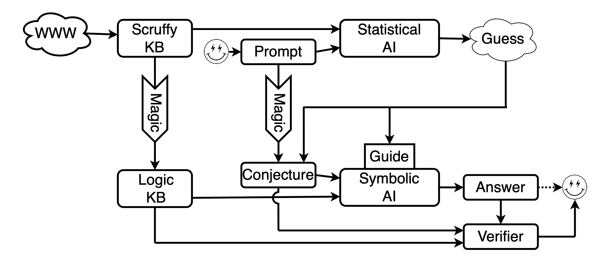

Symbolic Checking of Statistical Solutions

The Problem
- Statistical tools (ML, LLMs, etc) are probabilistic
- Wrong answers, inconsistent answers, uninformed answers
- Well spoken lies are not truths (ask any politician)
A Solution (this is not all a new idea)
- Translate "scruffy" representations to logical formalisms
e.g., SUMO
comments to TFF, prompts to conjectures
- Use the statistical answer to select axioms, refine conjectures
- Check the statistical answer is a theorem
- A basis for verifiable and explainable AI